Тест-дизайн
Селиверстова Наталия
Шаров Илья
О чем лекция?
Что такое тест-дизайн
Техники тест-дизайна
Приемы для проектирования тестов
Практика!
Исчерпывающее тестирование
Проверяем все воможные случаи/варианты значений
Если случай тривиальный или проверка экстремально важна
Исчерпывающее тестирование
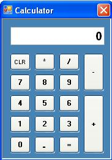
Тест-дизайн
процесс проектирования тестовых случаев
Техники тест-дизайна
набор практик и подходов к проектированию тестов
Классы эквивалентности
Техника для проверки разных наборов входных данных
Строится на предположениях:
- для тестов с элементами из одного класса одинаковый ожидаемый результат
- если один элемент класса находит ошибку, то и другой ее найдет
Пример: Длина метки
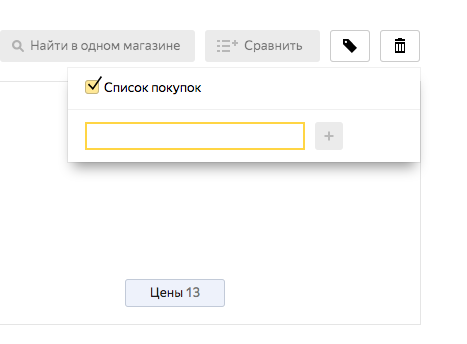
Длина названия метки не должна превышать 20 символов
Классы эквивалентности
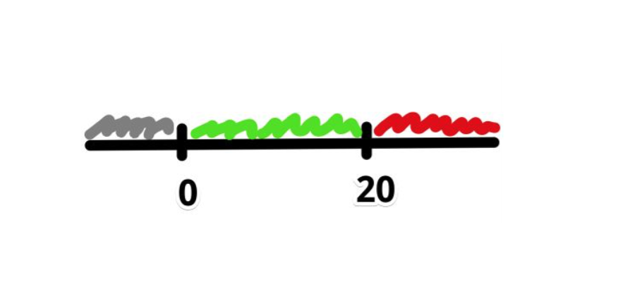
Что проверим в итоге?
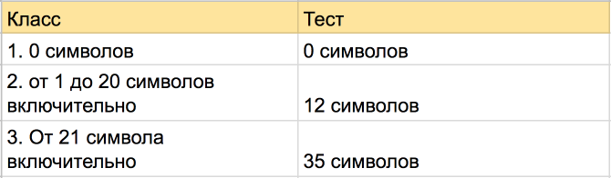
Граничные значения
Техника для проверки разных наборов входных данных
Строится на предположении:
- ошибки чаще всего случаются на границах классов эквивалентности
Приграничные значения
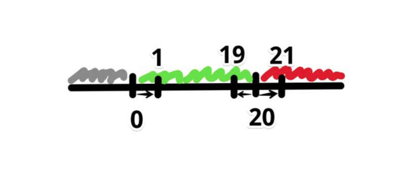
Классы + границы = тесты:
- 0 символов
- 1 символ
- 12 символов
- 19 символов
- 20 символов
- 21 символ
- 35 символов
Правило!
Сначала всегда проверяются положительные тест-кейсы
Они самые важные
Классы могут быть разные
- по количеству символов
- по типу символов
- размер картинки в верстке
- размер загружаемого файла
- крайние даты месяца/года
- и т.д
Как искать классы и границы?
- Каким бывает тестируемое поле?
- Каким оно не бывает?
- Какие есть границы между 1 и 2?
Какие проводить тесты?
- Выбрать по 1 представителю от каждого класса
- Выбрать значения на границах
- Выбрать приграничные значения
Идеи для проверок полей ввода
- ограничения на длину поля (не больше 9)
- ограничения на вводимые символы (“,%@, abc)
- ограничения на положение символов (твит c #)
- валидность по типу поля (32 мая)
- обязательность/пустое поле
- лишние пробелы (в начале/конце/середине)
Попарное тестирование
Техника для формирования сочетания данных, когда есть зависимые поля, и нужно проверить все
Строится на предположении:
- большинство ошибок находятся на одном параметре или сочетании двух
Попарное тестирование
Каждое тестируемое значение каждого из проверяемых параметров хотя бы единожды сочетается с каждым тестируемым значением всех остальных проверяемых параметров
Попарное тестирование
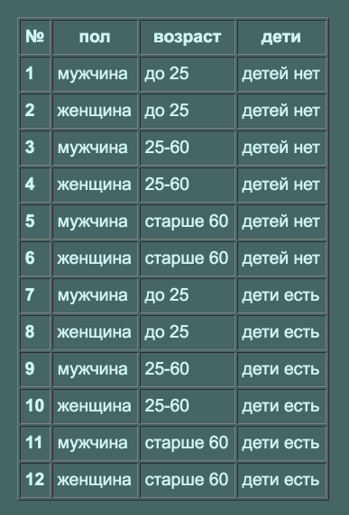
Попарное тестирование
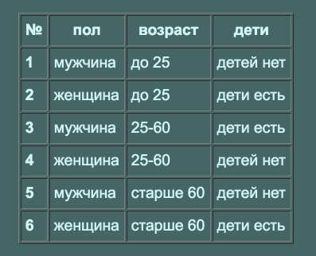
Правило!
Нельзя объединять два негативных кейса в один
Иначе будет непонятно, который обработался программой
Диаграмма состояний
Техника для сущностей, у которых есть жизненный цикл
Помогает найти все состояния объекта, переходы и условия переходов между состояниями
Диаграмма состояний
- Состояние
- Переход
- Событие/условие
- Действие
- Точки входа/выхода
Что проверяем?
- Как система ведет себя в определенном состоянии?
- Факт перехода между состояниями?
- Если не выполнены все условия для перехода?
- Если выполнены все условия/события для перехода?
Диаграмма состояний
Что еще?
Найти и проверить запрещенные переходы при помощи матрицы переходов
Состояния письма
- Сразу после получения сообщений с почтового сервера они помечены как непрочитанные.
- Когда пользователь открывает письмо, сообщение становится прочитанным.
- Пользователь может пометить ранее прочитанные сообщения как непрочитанные.
- Пользователь может удалить сообщения (как прочитанные, так и непрочитанные), вернуть их нельзя
Пример диаграммы состояний
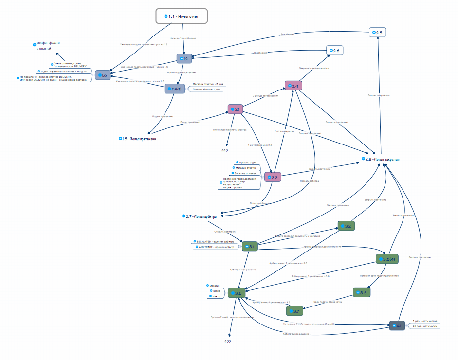
Пример диаграммы состояний
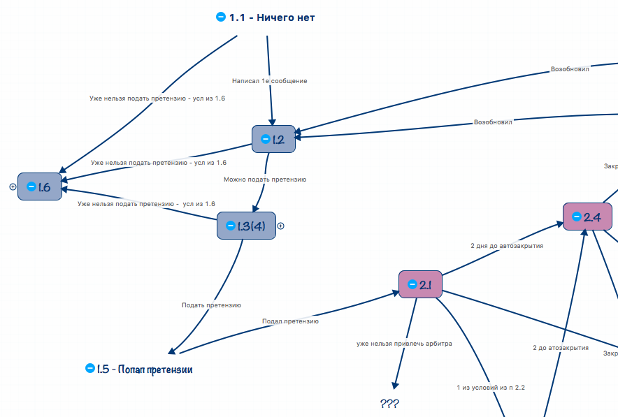
Инструменты MindMap
- XMind
- MindJet Mindmanager
- Mindmeister
- FreeMind
- и др.
Декомпозиция при помощи MindMap
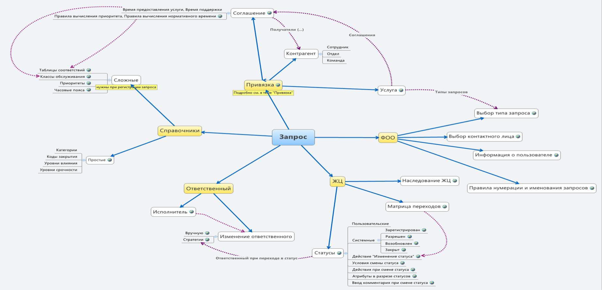
Другие приемы в тестировании
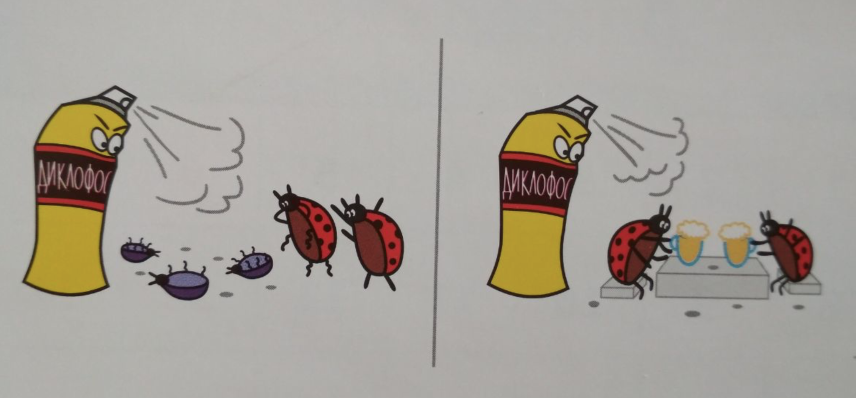
Прием "4 действия с объектом"
- Создание
- Просмотр
- Редактирование
- Удаление
Причина - следствие
Причина: Ввод значения в поле и нажатие "Добавить"
Следствие: Добаленное значение отображается во всех нужных местах
"НЕ" к каждому слову в требовании
Если (не) код (не) введен (не) верно, открывается страница регистрации
Предугадывание ошибки
"Пользователь должен ввести код"
- А что если не ввел код?
- А что если неправильный код?
- и тд
Техники и приемы
- Классы эквивалентности и анализ граничных значений
- Попарное тестирование
- Диаграмма состояний и матрица переходов
- Приемы: 4 действия, причина-следтсвие, "не" и предугадывание
Зачем?
- Структурировать
- Найти все необходимые проверки
- Сделать тестов меньше, а покрытие больше
Покрытие
Метрика качества тестирования. Полнота охвата тестами требований или кода.
Отношение количества тестов к количеству требований.
Качество построенных тестов зависит от полноты информации о продукте.
Пример
Если при оформлении заказа товар закончился или цена изменилась, то нужно сообщить об этом покупателю
Пример
Обращение по API к магазину происходит трижды
(прием "причина-следствие")
Еще раз
Качество построенных тестов зависит от полноты информации о продукте.
Спасибо за внимание!
Вопросы?
Протестируем форму регистрации
Какие группы проверок можно выделить?
Конфигурационное тестирование
Функциональное тестирование
Интеграционное тестирование
Валидный - соответствующий требованиям, допустимый.
Поле ввода "Имя"
Требования:
1. Принимает буквенные значения
2. Длина от 2 до 30 символов
3. Обязательно к заполнению
Определим классы эквивалентности
|
Принимает только буквенные значения
|
- Допустимые значения (Буквы)
- Недопустимые значения (Цифры, Спецсимволы)
|
Определим граничные значения
|
Длина от 2 до 30 символов
|
- Значения на границах (2 символа и 30)
- Приграничные значения (3, 29)
- Значения за пределами границ (1, 45)
|
Позитивные проверки
- Принимает только буквенные значения
- Длина от 2 до 30 символов
- Обязательное поле
|
- Значение внутри диапазона, например "Олег"
- Значение на левой границе диапазона, например "Ян"
- Приграничные значения, "Оля", "Ррррррррррррррррррррррррррррр"
- Значение на правой границе диапазона, например "Паула Хуан Непомукено Криспино"
- Составное имя, например "Анна-Мария"
|
Негативные проверки
- Принимает буквенные значения
- Длина от 2 до 30 символов
- Обязательное поле
|
- Пустое поле
- Пробелы
- Спецсимволы
- Цифры
- Ввести > 30 символов
- Ввести < 2 символов
|
Позитивный тест кейс
Проверим, как форма реагирует на простое Имя
ID: Name1
Название: Регистрация с валидным значением в поле "Имя"
Предусловие: Перейти на страницу регистрации. Все обязательные поля, кроме поля "Имя", необходимо заполнить валидными данными
Шаги:
1. В поле "Имя" ввести "Пётр"
2. Нажать "Отправить"
Ожидаемый результат: Сообщение об успешной регистрации, с отбивкой на почту
Негативный тест кейс
Проверим, как форма реагирует на числа
ID: Name2
Название: Регистрация с цифрами в поле "Имя"
Предусловие: Перейти на страницу регистрации. Все обязательные поля, кроме поля "Имя", необходимо заполнить валидными данными
Шаги:
1. В поле "Имя" ввести 1234567884
2. Нажать "Отправить"
Ожидаемый результат:
Ошибка: В поле "Имя" необходимо вводить буквы
Поле ввода "Email"
Требования:
2. Поле проверяет, чтобы email был формата login@domain.tld
3. Максимальная длина 40 символов
4. Обязательно к заполнению
Позитивные проверки
- Поле проверяет, чтобы email был формата login@domain.tld
- Максимальная длина 40 символов
- Обязательно к заполнению
|
- Корректный email, например tester@yandex.ru
|
Негативные проверки
- Поле проверяет, чтобы email был формата login@domain.tld
- Максимальная длина 40 символов
- Обязательно к заполнению
|
- Пустое поле
- Пробелы
- Не email
- > 40 символов
|
Нашли Дефект!
Регистрация проходит без заполнения email
Что делаем?
Это баг?
Воспроизводится?
Известно ли о проблеме?
Сообщаем миру :)
Поле ввода "Возраст"
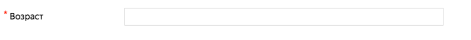
Требования:
1. Диапазон значений от 18 до 160
2. Принимает только числовые значения
3. Обязательно к заполнению
Позитивные проверки
- Диапазон значений от 18 до 160
- Принимает только числовые значения
- Обязательно к заполнению
|
- Приграничные значения (17, 159)
- Значения на границах (18, 160)
|
Негативные проверки
- Диапазон значений от 18 до 160
- Принимает только числовые значения
- Обязательно к заполнению
|
- Буквы
- Спецсимволы
- Пустое поле
- Пробелы
- < 18
- > 160
|
Форма загрузки
Требования:
1. Только указанные форматы (zip,rar,jpeg)
2. Размер файла от 1 MB до 40 MB
3. Обязательно к заполнению
Позитивные проверки
- Только указанные форматы (zip,rar,jpeg)
- Обязательно к заполнению
|
- Загрузка допустимых форматов
- Размер файла = 1MB
- Размер файла = 40MB
- Размер файла = 37MB
|
Негативные проверки
- Только указанные форматы (zip,rar,jpeg)
- Обязательно к заполнению
|
- Недопустимые форматы
- < 1 MB
- > 40 MB
- Ничего не загружать
|
Поле ввода "О себе"
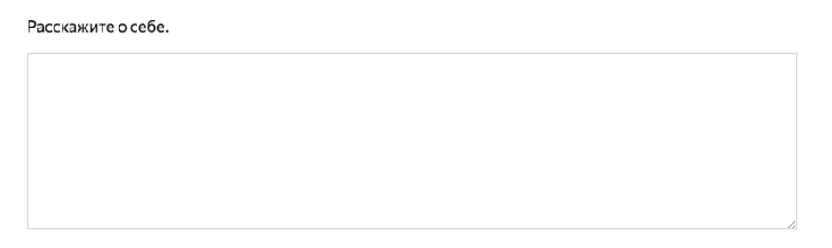
Требования:
1. Вмещает 240 символов
2. Не обязательно к заполнению
Позитивные проверки
- Вмещает 240 символов
- Не обязательно к заполнению
|
- <= 240 символов
- Регистрация успешно проходит без заполнения поля
|
Негативные проверки
- Вмещает 240 символов
- Не обязательно к заполнению
|
- > 240 символов
- Длинный текст без пробелов
- Очень большой текст
- Перетащить в форму загрузки картинку
- Поресайзить форму
|
Можно ли как-то улучшить?
Подтверждение
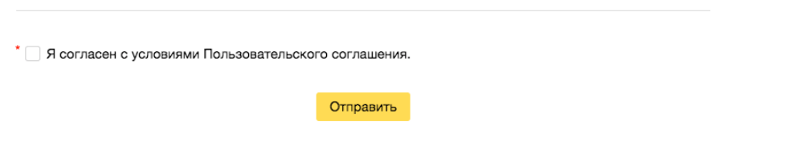
Требования:
1. Обязательно к заполнению
Заключительная часть
Тестирование - анализ продукта на соответствие требованиям
Важно анализировать требования